10 Time Series
We will cover the basic handling of time series in R. We will meet quarterly and monthly time series as well as daily time series, and check out ways to forecast them. We will also cover the tsbox package, which allows you to convert between various time series classes.
10.1 Time Series Objects
R offers a build-in object class that facilitates working with time series
data. Like matrices, time series objects (or ts objects) are basically a
vector with an additional attribute. In order to create a ts object, use
the ts function:
## [1] "ts"We will cover the tsbox package in a second. Among other, it gives you a convenient way to plot all kind of time series:
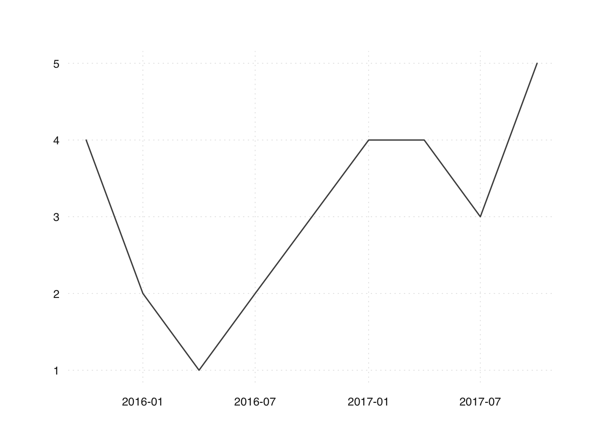
The first argument is the data, a vector.
The start argument describes the beginning of the time series. It is
usually a vector of length 2; first the year, then the higher frequency
period – the quarter, the month, the day.
The frequency argument describes the frequency. It is 4 in our case,
indicating quarterly data, but may be any other integer value.
There are many build-in example time series R. A popular is AirPassengers,
which shows monthly totals of international airline passengers, from 1949 to
1960.
## Jan Feb Mar Apr May Jun Jul Aug Sep Oct Nov Dec
## 1949 112 118 132 129 121 135 148 148 136 119 104 118
## 1950 115 126 141 135 125 149 170 170 158 133 114 140
## 1951 145 150 178 163 172 178 199 199 184 162 146 166
## 1952 171 180 193 181 183 218 230 242 209 191 172 194
## 1953 196 196 236 235 229 243 264 272 237 211 180 201
## 1954 204 188 235 227 234 264 302 293 259 229 203 229
## 1955 242 233 267 269 270 315 364 347 312 274 237 278
## 1956 284 277 317 313 318 374 413 405 355 306 271 306
## 1957 315 301 356 348 355 422 465 467 404 347 305 336
## 1958 340 318 362 348 363 435 491 505 404 359 310 337
## 1959 360 342 406 396 420 472 548 559 463 407 362 405
## 1960 417 391 419 461 472 535 622 606 508 461 390 432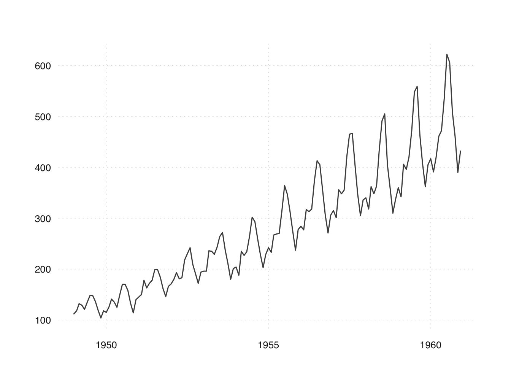
10.2 Economic Time Series
More often than constructing your own time series, you will get time series from other sources, e.g., from spreadsheets, from databases, or from the Internet.
There is a vast number of on-line data sources for time series, as well as a plethora of R packages to access them. For economic data, the FRED database is one of the best free on-line data source. However, it needs (free) registration and an API key, so we will use a different package in the following. A partial list with packages can be found [here](https://cengel.github.io/gearup2016/SULdataAccess.html(). Another good website for economic data is dbnomics.
## Visit <https://db.nomics.world>.swiss_gdp <-
rdb(ids = c(
"Eurostat/namq_10_gdp/Q.CLV05_MEUR.NSA.B1G.CH"
)) %>%
select(period, value) %>%
ts_ts()## [time]: 'period'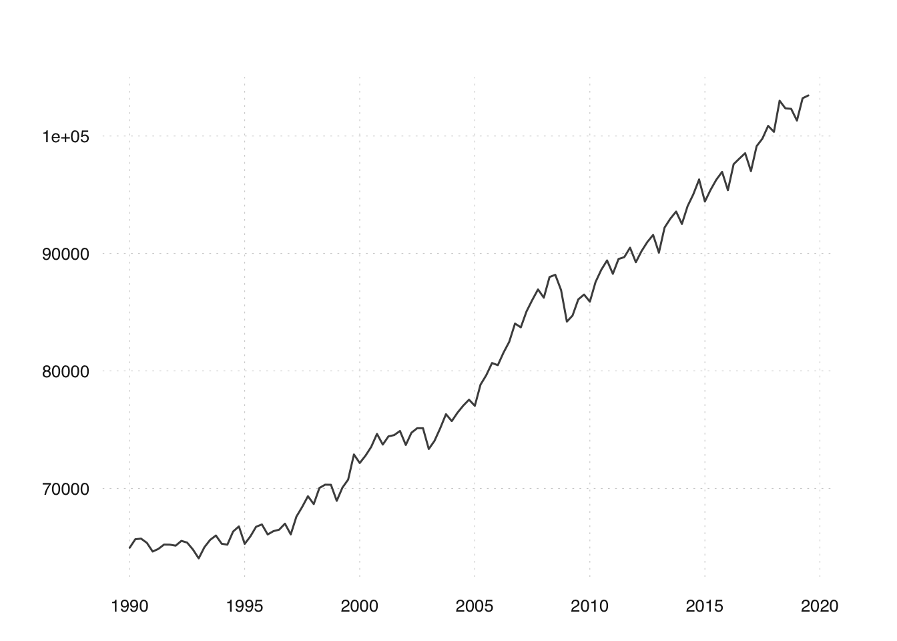
10.3 Financial Time Series
For financial data, a popular package is quantmod, which allows you to access multiple data sources.
Let’s get Apple stock data; Apple’s ticker symbol is AAPL. We use the
quantmod function getSymbols, and pass a string as a first argument to
identify the desired ticker symbol, pass 'yahoo' to src for Yahoo!
Finance. Always use auto.assign = TRUE in getSymbols(). The default
behavior is confusing and should be avoided.
## Loading required package: xts## Registered S3 method overwritten by 'xts':
## method from
## as.zoo.xts zoo##
## Attaching package: 'xts'## The following objects are masked from 'package:dplyr':
##
## first, last## Loading required package: TTR## Registered S3 method overwritten by 'quantmod':
## method from
## as.zoo.data.frame zoo## Version 0.4-0 included new data defaults. See ?getSymbols.apple <-
getSymbols("AAPL", src = "yahoo", auto.assign = FALSE) %>%
ts_tbl() %>%
filter(id == "AAPL.Close")## 'getSymbols' currently uses auto.assign=TRUE by default, but will
## use auto.assign=FALSE in 0.5-0. You will still be able to use
## 'loadSymbols' to automatically load data. getOption("getSymbols.env")
## and getOption("getSymbols.auto.assign") will still be checked for
## alternate defaults.
##
## This message is shown once per session and may be disabled by setting
## options("getSymbols.warning4.0"=FALSE). See ?getSymbols for details.tsbox::ts_tbl converts the output of getSymbols to a tibble data frame,
which is much more useful. We will cover it later on. We use filter to focus
on closing prices.
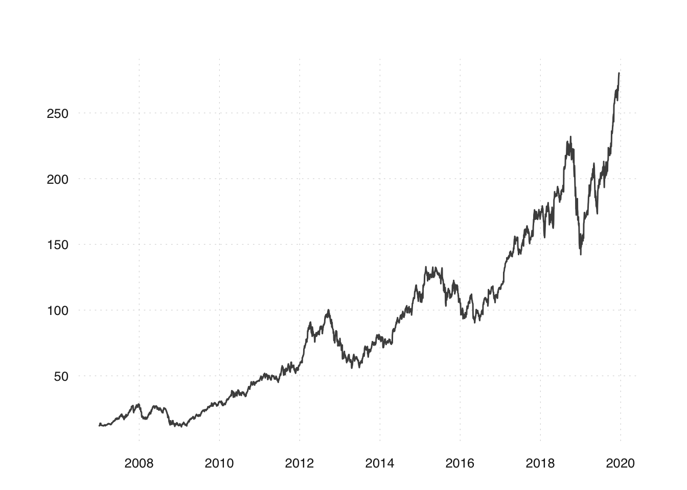
This data covers business days only, so it is not regular. ts objects are
not suitable to store data like this. Usually, data frames are a good
alternative, but there are many other time series classes that deal with
daily time series in R. We will meet some of them later on.
10.4 Automatic ARIMA Forecasting with the ‘forecast’ package
The forecast package offers many useful functions for working with regular
time-series, such as swiss_gdp. We will just cover a single function that
allows you to automatically build an ARIMA model.
For more information on ARIMA based time series forecasting in R, please refer to the free online book, Forecasting: principles and practice, by Rob Hyndman:
## Registered S3 methods overwritten by 'forecast':
## method from
## fitted.fracdiff fracdiff
## residuals.fracdiff fracdiffIf you don’t know much about a time series, but want to produce a simple
forecast without external indicators, the auto.arima function is your
friend. Let’s say we want to know what will happen to AirPassengers in
1961.
## Series: AirPassengers
## ARIMA(2,1,1)(0,1,0)[12]
##
## Coefficients:
## ar1 ar2 ma1
## 0.5960 0.2143 -0.9819
## s.e. 0.0888 0.0880 0.0292
##
## sigma^2 estimated as 132.3: log likelihood=-504.92
## AIC=1017.85 AICc=1018.17 BIC=1029.35## # A tibble: 3 x 3
## term estimate std.error
## <fct> <dbl> <dbl>
## 1 ar1 0.596 0.0888
## 2 ar2 0.214 0.0880
## 3 ma1 -0.982 0.0292As the ‘auto’ indicates, the function does everything on its own. First, it made the series stationary, by taking first differences and seasonal differences. Second, on the stationary series, it evaluates what it finds to be the best ARMA model. AR and MA models are just special cases of ARMA models.
With these details you could also have fed the built-in arima function, to
verify the result of the estimation:
##
## Call:
## arima(x = AirPassengers, order = c(2, 1, 1), seasonal = c(0, 1, 0))
##
## Coefficients:
## ar1 ar2 ma1
## 0.5960 0.2143 -0.9819
## s.e. 0.0888 0.0880 0.0292
##
## sigma^2 estimated as 129.3: log likelihood = -504.92, aic = 1017.85In order to produce a forecast, the forecast package has a function
forecast(), which can be applied on the output of auto.arima(). The h
argument indicates the number of periods to be forecasted:

In order to access the point forecast, you can access the mean component of
the forecast() output:
## Jan Feb Mar Apr May Jun Jul Aug
## 1961 445.6349 420.3950 449.1983 491.8399 503.3944 566.8624 654.2601 638.5974
## Sep Oct Nov Dec
## 1961 540.8837 494.1266 423.3327 465.507510.5 Seasonal Adjustment
Many time series exhibit a regular seasonal pattern over the year. US unemployment, for example, is usually higher from January to March, and again in June and July. Similarly, retail sales tend to peak with the Christmas season.
To model the underlying structure of these series, any regular (seasonal) patterns are estimated and removed from the data. For example, to see if the economy is moving out of a recession during certain months, one wants the labor market data to be free from such seasonal effects. Seasonal adjustment decomposes a time series into a trend, a seasonal and an irregular component and removes the seasonal component from the data.
The seasonal packages gives access to X-13ARIMA-SEATS, the seasonal adjustment software from the U.S. Census bureau. It is the standard software for seasonal adjustment of regular time series and takes care of seasonal effects, Easter effects and trading day adjustment.
Basic usage is very simple and offers a good seasonal adjustment in most cases:
##
## Attaching package: 'seasonal'## The following object is masked from 'package:randomForest':
##
## outlier## The following object is masked from 'package:tibble':
##
## view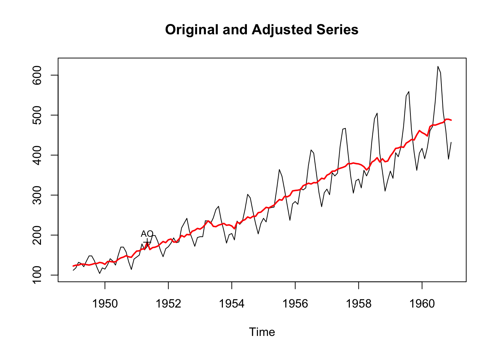
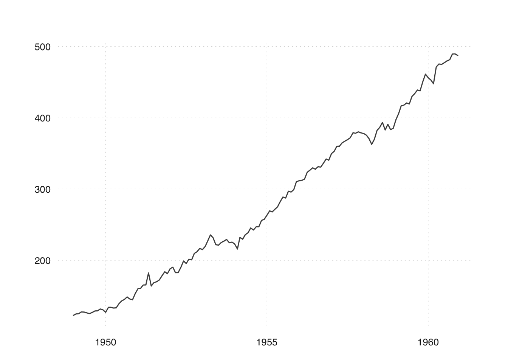
10.6 Forecasting daily time series
While auto.arima() and seas() work well with regular data, they are not
suitable for daily data. An easy to use forecasting tool for daily (or even
hourly) data is Facebook’s R package prophet. Note that such a forecast is
purely based on historical information, and may have close to zero value for
for financial data. Let’s try it nevertheless.
## Loading required package: Rcpp## Loading required package: rlang##
## Attaching package: 'rlang'## The following objects are masked from 'package:purrr':
##
## %@%, as_function, flatten, flatten_chr, flatten_dbl, flatten_int,
## flatten_lgl, flatten_raw, invoke, list_along, modify, prepend,
## spliceWe call the prophet function to fit the model. The first argument is the
historical data frame. It must have columns ds, for the time stamp, and y,
the value of the series.
## Disabling daily seasonality. Run prophet with daily.seasonality=TRUE to override this.prophet checks for daily, weekly, and yearly seasonality, as well as for holiday effects. Because our data is daily, there is no daily seasonality. This would only appear, e.g., in hourly data.
Predictions are made on a data frame with a column ds containing the dates
for which predictions are to be made. make_future_dataframe() takes the
model object and a number of periods to forecast and produces a suitable data
frame.
## ds
## 3624 2020-12-12
## 3625 2020-12-13
## 3626 2020-12-14
## 3627 2020-12-15
## 3628 2020-12-16
## 3629 2020-12-17As with most modeling procedures in R, we use the generic predict function to
get our forecast. The forecast object is a data frame with a column yhat
containing the forecast. It has additional columns for uncertainty intervals
and seasonal components.
fct_prophet <-
predict(m_prophet, df_future) %>%
as_tibble()
fct_prophet %>%
select(ds, yhat) %>%
tail()## # A tibble: 6 x 2
## ds yhat
## <dttm> <dbl>
## 1 2020-12-12 00:00:00 255.
## 2 2020-12-13 00:00:00 255.
## 3 2020-12-14 00:00:00 256.
## 4 2020-12-15 00:00:00 256.
## 5 2020-12-16 00:00:00 256.
## 6 2020-12-17 00:00:00 256.You can use the generic plot function to plot the forecast, by passing in the model and the forecast data frame.
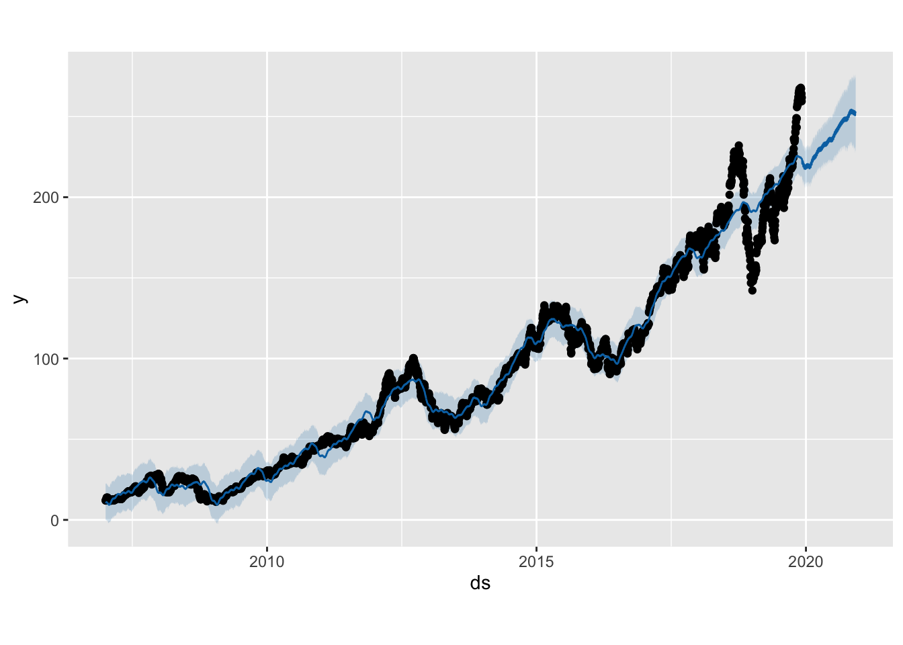
You can use `prophet_plot_components() to see the forecast broken down into trend, weekly seasonality, and yearly seasonality:
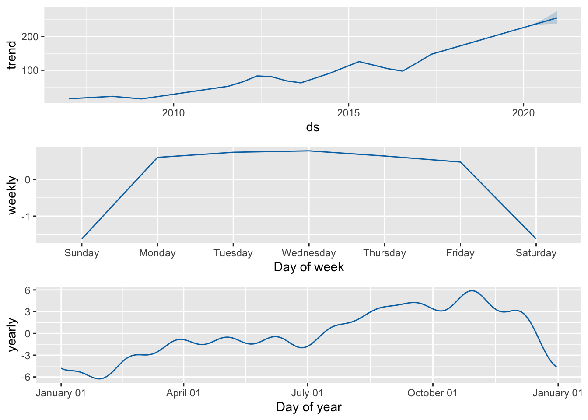
10.7 Exercises
Estimate an automated ARIMA model of Swiss GDP.
Inspect the model: What is the degree of seasonal and non-seasonal differentiation, what are the seasonal and non-seasonal AR and MA orders?
Re-estimate 1, using R base
arima()functionSeasonally adjust Swiss GDP. Compare the ARIMA model with the one from
auto.arima.Download your stock title of choice. Use prophet to forecast the series.
10.8 From ts to tibble: The tsbox package
The R ecosystem knows a vast number of time series classes: ts, xts, zoo, tsibble, tibbletime or timeSeries. The plethora of standards causes confusion. As different packages rely on different classes, it is hard to use them in the same analysis. tsbox provides a set of tools that make it easy to switch between these classes. It also allows the user to treat time series as plain data frames, facilitating the use with tools that assume rectangular data. It has it’s own website.
tsbox is built around a set of converters, which convert time series stored as ts, xts, data.frame, data.table, tibble, zoo, tsibble, tibbletime or timeSeries to each other.
Because this works reliably, we can easily write functions that work for all classes. So whether we want to smooth, scale, differentiate, chain, forecast, regularize or seasonally adjust a time series, we can use the same commands to whatever time series class at hand. And, most conveniently, we get a time series plot function that works for all classes and frequencies.
10.8.1 Convert everything to everything
tsbox can convert time series stored as ts, xts, data.frame, data.table, tibble, zoo, tsibble, tibbletime or timeSeries to each other:
library(tsbox)
x_ts <- ts_c(fdeaths, mdeaths)
x_xts <- ts_xts(x_ts)
x_df <- ts_df(x_xts)
x_dt <- ts_df(x_df)
x_tbl <- ts_tbl(x_dt)
# and more exotic stuff
x_zoo <- ts_zoo(x_tbl)
x_tsibble <- ts_tsibble(x_zoo)## Loading required namespace: tsibble## [1] TRUE10.8.2 Use same functions for all time series classes
tsbox provides a basic toolkit for handling time series. These functions
start with ts_, so you use them with auto complete (press Tab). These
functions work with any ts-boxable time series, ts, xts, data.frame,
data.table tibble, zoo, tsibble or timeSeries and return the class of their
inputs.
For example, the ts_scale function performs normalization - it subtracts
the mean and divides by the standard deviation of series. Like almost all ts-
functions, it can be used with on any ts-boxable object, with single or
multiple time series. Because ts_scale normalizes time series, it is useful
to make different time series comparable. All of the following operations
perform the same task, but return the same object class as the input:
## fdeaths mdeaths
## 1974-01-01 1.89360883 1.473056003
## 1974-02-01 0.71399633 0.847408011
## 1974-03-01 1.48185729 0.879729310
## 1974-04-01 0.64722581 0.879729310
## 1974-05-01 -0.21522673 -0.009106398
## 1974-06-01 -0.86067508 -0.570111792
## 1974-07-01 -0.66592773 -0.498543203
## 1974-08-01 -0.93300981 -0.842534165
## 1974-09-01 -0.96639507 -0.662458359
## 1974-10-01 0.11862586 -0.009106398
## 1974-11-01 0.09636902 0.288711281
## 1974-12-01 0.58601950 0.808160720
## 1975-01-01 1.49854992 1.401487414
## 1975-02-01 1.06454155 1.479981995
## 1975-03-01 1.24816048 1.516920622
## 1975-04-01 0.57489108 0.778148086
## 1975-05-01 -0.52125828 -0.214577509
## 1975-06-01 -0.68262036 -0.480073889
## 1975-07-01 -0.77721193 -0.715557635
## 1975-08-01 -0.82728982 -0.837916837
## 1975-09-01 -1.21122031 -1.022609971
## 1975-10-01 -0.67149194 -0.343862703
## 1975-11-01 -0.16514884 0.113252804
## 1975-12-01 1.17026154 1.316066839
## 1976-01-01 1.14800470 1.209868287
## 1976-02-01 3.22901921 2.895193135
## 1976-03-01 1.86578778 1.817046965
## 1976-04-01 -0.15958463 -0.039119032
## 1976-05-01 -0.63254247 -0.708631643
## 1976-06-01 -0.78277614 -0.775582904
## 1976-07-01 -1.02760138 -0.884090120
## 1976-08-01 -1.28355504 -1.214229097
## 1976-09-01 -1.13332137 -1.147277836
## 1976-10-01 -0.64367089 -0.664767023
## 1976-11-01 -0.08168569 -0.066823002
## 1976-12-01 1.13131207 1.299906190
## 1977-01-01 1.67660464 1.717774406
## 1977-02-01 0.55263424 0.318723915
## 1977-03-01 0.56932687 0.521886363
## 1977-04-01 0.45804267 0.704270833
## 1977-05-01 -0.32651093 -0.577037785
## 1977-06-01 -0.93857402 -0.770965575
## 1977-07-01 -0.83285403 -0.944115389
## 1977-08-01 -1.18339926 -1.114956538
## 1977-09-01 -0.96639507 -1.239624403
## 1977-10-01 -0.97752349 -0.731718284
## 1977-11-01 -0.83285403 -0.616285076
## 1977-12-01 0.43022162 0.367205863
## 1978-01-01 1.30936679 1.207559623
## 1978-02-01 1.62652675 1.819355629
## 1978-03-01 0.98107840 1.029792481
## 1978-04-01 -0.08168569 -0.168404226
## 1978-05-01 -0.17071305 -0.360023352
## 1978-06-01 -0.63810668 -0.713248971
## 1978-07-01 -0.72156983 -0.918720083
## 1978-08-01 -1.10550032 -1.135734515
## 1978-09-01 -0.96639507 -1.214229097
## 1978-10-01 -0.72713404 -0.821756187
## 1978-11-01 -0.75495509 -0.891016113
## 1978-12-01 0.65835423 0.729666139
## 1979-01-01 1.44847204 1.770873682
## 1979-02-01 1.24816048 0.748135452
## 1979-03-01 0.92543630 0.808160720
## 1979-04-01 0.28555216 0.080931505
## 1979-05-01 -0.46005197 -0.648606374
## 1979-06-01 -0.73269825 -0.971819359
## 1979-07-01 -0.86623929 -1.015683978
## 1979-08-01 -1.01090875 -1.202685776
## 1979-09-01 -0.93300981 -1.283489022
## 1979-10-01 -0.83285403 -0.957967374
## 1979-11-01 -0.40997408 -0.466221904
## 1979-12-01 0.07411218 -0.357714688## id time value
## 1 fdeaths 1974-01-01 1.893608829
## 2 fdeaths 1974-02-01 0.713996326
## 3 fdeaths 1974-03-01 1.481857295
## 4 fdeaths 1974-04-01 0.647225807
## 5 fdeaths 1974-05-01 -0.215226731
## 6 fdeaths 1974-06-01 -0.860675082
## 7 fdeaths 1974-07-01 -0.665927734
## 8 fdeaths 1974-08-01 -0.933009811
## 9 fdeaths 1974-09-01 -0.966395070
## 10 fdeaths 1974-10-01 0.118625864
## 11 fdeaths 1974-11-01 0.096369025
## 12 fdeaths 1974-12-01 0.586019497
## 13 fdeaths 1975-01-01 1.498549924
## 14 fdeaths 1975-02-01 1.064541551
## 15 fdeaths 1975-03-01 1.248160478
## 16 fdeaths 1975-04-01 0.574891078
## 17 fdeaths 1975-05-01 -0.521258276
## 18 fdeaths 1975-06-01 -0.682620364
## 19 fdeaths 1975-07-01 -0.777211933
## 20 fdeaths 1975-08-01 -0.827289822
## 21 fdeaths 1975-09-01 -1.211220307
## 22 fdeaths 1975-10-01 -0.671491944
## 23 fdeaths 1975-11-01 -0.165148842
## 24 fdeaths 1975-12-01 1.170261539
## 25 fdeaths 1976-01-01 1.148004699
## 26 fdeaths 1976-02-01 3.229019209
## 27 fdeaths 1976-03-01 1.865787779
## 28 fdeaths 1976-04-01 -0.159584632
## 29 fdeaths 1976-05-01 -0.632542475
## 30 fdeaths 1976-06-01 -0.782776143
## 31 fdeaths 1976-07-01 -1.027601379
## 32 fdeaths 1976-08-01 -1.283555035
## 33 fdeaths 1976-09-01 -1.133321368
## 34 fdeaths 1976-10-01 -0.643670895
## 35 fdeaths 1976-11-01 -0.081685693
## 36 fdeaths 1976-12-01 1.131312070
## 37 fdeaths 1977-01-01 1.676604642
## 38 fdeaths 1977-02-01 0.552634238
## 39 fdeaths 1977-03-01 0.569326868
## 40 fdeaths 1977-04-01 0.458042669
## 41 fdeaths 1977-05-01 -0.326510929
## 42 fdeaths 1977-06-01 -0.938574020
## 43 fdeaths 1977-07-01 -0.832854032
## 44 fdeaths 1977-08-01 -1.183399257
## 45 fdeaths 1977-09-01 -0.966395070
## 46 fdeaths 1977-10-01 -0.977523490
## 47 fdeaths 1977-11-01 -0.832854032
## 48 fdeaths 1977-12-01 0.430221620
## 49 fdeaths 1978-01-01 1.309366787
## 50 fdeaths 1978-02-01 1.626526752
## 51 fdeaths 1978-03-01 0.981078402
## 52 fdeaths 1978-04-01 -0.081685693
## 53 fdeaths 1978-05-01 -0.170713052
## 54 fdeaths 1978-06-01 -0.638106685
## 55 fdeaths 1978-07-01 -0.721569834
## 56 fdeaths 1978-08-01 -1.105500318
## 57 fdeaths 1978-09-01 -0.966395070
## 58 fdeaths 1978-10-01 -0.727134044
## 59 fdeaths 1978-11-01 -0.754955093
## 60 fdeaths 1978-12-01 0.658354226
## 61 fdeaths 1979-01-01 1.448472035
## 62 fdeaths 1979-02-01 1.248160478
## 63 fdeaths 1979-03-01 0.925436303
## 64 fdeaths 1979-04-01 0.285552162
## 65 fdeaths 1979-05-01 -0.460051967
## 66 fdeaths 1979-06-01 -0.732698253
## 67 fdeaths 1979-07-01 -0.866239292
## 68 fdeaths 1979-08-01 -1.010908749
## 69 fdeaths 1979-09-01 -0.933009811
## 70 fdeaths 1979-10-01 -0.832854032
## 71 fdeaths 1979-11-01 -0.409974078
## 72 fdeaths 1979-12-01 0.074112185
## 73 mdeaths 1974-01-01 1.473056003
## 74 mdeaths 1974-02-01 0.847408011
## 75 mdeaths 1974-03-01 0.879729310
## 76 mdeaths 1974-04-01 0.879729310
## 77 mdeaths 1974-05-01 -0.009106398
## 78 mdeaths 1974-06-01 -0.570111792
## 79 mdeaths 1974-07-01 -0.498543203
## 80 mdeaths 1974-08-01 -0.842534165
## 81 mdeaths 1974-09-01 -0.662458359
## 82 mdeaths 1974-10-01 -0.009106398
## 83 mdeaths 1974-11-01 0.288711281
## 84 mdeaths 1974-12-01 0.808160720
## 85 mdeaths 1975-01-01 1.401487414
## 86 mdeaths 1975-02-01 1.479981995
## 87 mdeaths 1975-03-01 1.516920622
## 88 mdeaths 1975-04-01 0.778148086
## 89 mdeaths 1975-05-01 -0.214577509
## 90 mdeaths 1975-06-01 -0.480073889
## 91 mdeaths 1975-07-01 -0.715557635
## 92 mdeaths 1975-08-01 -0.837916837
## 93 mdeaths 1975-09-01 -1.022609971
## 94 mdeaths 1975-10-01 -0.343862703
## 95 mdeaths 1975-11-01 0.113252804
## 96 mdeaths 1975-12-01 1.316066839
## 97 mdeaths 1976-01-01 1.209868287
## 98 mdeaths 1976-02-01 2.895193135
## 99 mdeaths 1976-03-01 1.817046965
## 100 mdeaths 1976-04-01 -0.039119032
## 101 mdeaths 1976-05-01 -0.708631643
## 102 mdeaths 1976-06-01 -0.775582904
## 103 mdeaths 1976-07-01 -0.884090120
## 104 mdeaths 1976-08-01 -1.214229097
## 105 mdeaths 1976-09-01 -1.147277836
## 106 mdeaths 1976-10-01 -0.664767023
## 107 mdeaths 1976-11-01 -0.066823002
## 108 mdeaths 1976-12-01 1.299906190
## 109 mdeaths 1977-01-01 1.717774406
## 110 mdeaths 1977-02-01 0.318723915
## 111 mdeaths 1977-03-01 0.521886363
## 112 mdeaths 1977-04-01 0.704270833
## 113 mdeaths 1977-05-01 -0.577037785
## 114 mdeaths 1977-06-01 -0.770965575
## 115 mdeaths 1977-07-01 -0.944115389
## 116 mdeaths 1977-08-01 -1.114956538
## 117 mdeaths 1977-09-01 -1.239624403
## 118 mdeaths 1977-10-01 -0.731718284
## 119 mdeaths 1977-11-01 -0.616285076
## 120 mdeaths 1977-12-01 0.367205863
## 121 mdeaths 1978-01-01 1.207559623
## 122 mdeaths 1978-02-01 1.819355629
## 123 mdeaths 1978-03-01 1.029792481
## 124 mdeaths 1978-04-01 -0.168404226
## 125 mdeaths 1978-05-01 -0.360023352
## 126 mdeaths 1978-06-01 -0.713248971
## 127 mdeaths 1978-07-01 -0.918720083
## 128 mdeaths 1978-08-01 -1.135734515
## 129 mdeaths 1978-09-01 -1.214229097
## 130 mdeaths 1978-10-01 -0.821756187
## 131 mdeaths 1978-11-01 -0.891016113
## 132 mdeaths 1978-12-01 0.729666139
## 133 mdeaths 1979-01-01 1.770873682
## 134 mdeaths 1979-02-01 0.748135452
## 135 mdeaths 1979-03-01 0.808160720
## 136 mdeaths 1979-04-01 0.080931505
## 137 mdeaths 1979-05-01 -0.648606374
## 138 mdeaths 1979-06-01 -0.971819359
## 139 mdeaths 1979-07-01 -1.015683978
## 140 mdeaths 1979-08-01 -1.202685776
## 141 mdeaths 1979-09-01 -1.283489022
## 142 mdeaths 1979-10-01 -0.957967374
## 143 mdeaths 1979-11-01 -0.466221904
## 144 mdeaths 1979-12-01 -0.357714688## id time value
## 1 fdeaths 1974-01-01 1.893608829
## 2 fdeaths 1974-02-01 0.713996326
## 3 fdeaths 1974-03-01 1.481857295
## 4 fdeaths 1974-04-01 0.647225807
## 5 fdeaths 1974-05-01 -0.215226731
## 6 fdeaths 1974-06-01 -0.860675082
## 7 fdeaths 1974-07-01 -0.665927734
## 8 fdeaths 1974-08-01 -0.933009811
## 9 fdeaths 1974-09-01 -0.966395070
## 10 fdeaths 1974-10-01 0.118625864
## 11 fdeaths 1974-11-01 0.096369025
## 12 fdeaths 1974-12-01 0.586019497
## 13 fdeaths 1975-01-01 1.498549924
## 14 fdeaths 1975-02-01 1.064541551
## 15 fdeaths 1975-03-01 1.248160478
## 16 fdeaths 1975-04-01 0.574891078
## 17 fdeaths 1975-05-01 -0.521258276
## 18 fdeaths 1975-06-01 -0.682620364
## 19 fdeaths 1975-07-01 -0.777211933
## 20 fdeaths 1975-08-01 -0.827289822
## 21 fdeaths 1975-09-01 -1.211220307
## 22 fdeaths 1975-10-01 -0.671491944
## 23 fdeaths 1975-11-01 -0.165148842
## 24 fdeaths 1975-12-01 1.170261539
## 25 fdeaths 1976-01-01 1.148004699
## 26 fdeaths 1976-02-01 3.229019209
## 27 fdeaths 1976-03-01 1.865787779
## 28 fdeaths 1976-04-01 -0.159584632
## 29 fdeaths 1976-05-01 -0.632542475
## 30 fdeaths 1976-06-01 -0.782776143
## 31 fdeaths 1976-07-01 -1.027601379
## 32 fdeaths 1976-08-01 -1.283555035
## 33 fdeaths 1976-09-01 -1.133321368
## 34 fdeaths 1976-10-01 -0.643670895
## 35 fdeaths 1976-11-01 -0.081685693
## 36 fdeaths 1976-12-01 1.131312070
## 37 fdeaths 1977-01-01 1.676604642
## 38 fdeaths 1977-02-01 0.552634238
## 39 fdeaths 1977-03-01 0.569326868
## 40 fdeaths 1977-04-01 0.458042669
## 41 fdeaths 1977-05-01 -0.326510929
## 42 fdeaths 1977-06-01 -0.938574020
## 43 fdeaths 1977-07-01 -0.832854032
## 44 fdeaths 1977-08-01 -1.183399257
## 45 fdeaths 1977-09-01 -0.966395070
## 46 fdeaths 1977-10-01 -0.977523490
## 47 fdeaths 1977-11-01 -0.832854032
## 48 fdeaths 1977-12-01 0.430221620
## 49 fdeaths 1978-01-01 1.309366787
## 50 fdeaths 1978-02-01 1.626526752
## 51 fdeaths 1978-03-01 0.981078402
## 52 fdeaths 1978-04-01 -0.081685693
## 53 fdeaths 1978-05-01 -0.170713052
## 54 fdeaths 1978-06-01 -0.638106685
## 55 fdeaths 1978-07-01 -0.721569834
## 56 fdeaths 1978-08-01 -1.105500318
## 57 fdeaths 1978-09-01 -0.966395070
## 58 fdeaths 1978-10-01 -0.727134044
## 59 fdeaths 1978-11-01 -0.754955093
## 60 fdeaths 1978-12-01 0.658354226
## 61 fdeaths 1979-01-01 1.448472035
## 62 fdeaths 1979-02-01 1.248160478
## 63 fdeaths 1979-03-01 0.925436303
## 64 fdeaths 1979-04-01 0.285552162
## 65 fdeaths 1979-05-01 -0.460051967
## 66 fdeaths 1979-06-01 -0.732698253
## 67 fdeaths 1979-07-01 -0.866239292
## 68 fdeaths 1979-08-01 -1.010908749
## 69 fdeaths 1979-09-01 -0.933009811
## 70 fdeaths 1979-10-01 -0.832854032
## 71 fdeaths 1979-11-01 -0.409974078
## 72 fdeaths 1979-12-01 0.074112185
## 73 mdeaths 1974-01-01 1.473056003
## 74 mdeaths 1974-02-01 0.847408011
## 75 mdeaths 1974-03-01 0.879729310
## 76 mdeaths 1974-04-01 0.879729310
## 77 mdeaths 1974-05-01 -0.009106398
## 78 mdeaths 1974-06-01 -0.570111792
## 79 mdeaths 1974-07-01 -0.498543203
## 80 mdeaths 1974-08-01 -0.842534165
## 81 mdeaths 1974-09-01 -0.662458359
## 82 mdeaths 1974-10-01 -0.009106398
## 83 mdeaths 1974-11-01 0.288711281
## 84 mdeaths 1974-12-01 0.808160720
## 85 mdeaths 1975-01-01 1.401487414
## 86 mdeaths 1975-02-01 1.479981995
## 87 mdeaths 1975-03-01 1.516920622
## 88 mdeaths 1975-04-01 0.778148086
## 89 mdeaths 1975-05-01 -0.214577509
## 90 mdeaths 1975-06-01 -0.480073889
## 91 mdeaths 1975-07-01 -0.715557635
## 92 mdeaths 1975-08-01 -0.837916837
## 93 mdeaths 1975-09-01 -1.022609971
## 94 mdeaths 1975-10-01 -0.343862703
## 95 mdeaths 1975-11-01 0.113252804
## 96 mdeaths 1975-12-01 1.316066839
## 97 mdeaths 1976-01-01 1.209868287
## 98 mdeaths 1976-02-01 2.895193135
## 99 mdeaths 1976-03-01 1.817046965
## 100 mdeaths 1976-04-01 -0.039119032
## 101 mdeaths 1976-05-01 -0.708631643
## 102 mdeaths 1976-06-01 -0.775582904
## 103 mdeaths 1976-07-01 -0.884090120
## 104 mdeaths 1976-08-01 -1.214229097
## 105 mdeaths 1976-09-01 -1.147277836
## 106 mdeaths 1976-10-01 -0.664767023
## 107 mdeaths 1976-11-01 -0.066823002
## 108 mdeaths 1976-12-01 1.299906190
## 109 mdeaths 1977-01-01 1.717774406
## 110 mdeaths 1977-02-01 0.318723915
## 111 mdeaths 1977-03-01 0.521886363
## 112 mdeaths 1977-04-01 0.704270833
## 113 mdeaths 1977-05-01 -0.577037785
## 114 mdeaths 1977-06-01 -0.770965575
## 115 mdeaths 1977-07-01 -0.944115389
## 116 mdeaths 1977-08-01 -1.114956538
## 117 mdeaths 1977-09-01 -1.239624403
## 118 mdeaths 1977-10-01 -0.731718284
## 119 mdeaths 1977-11-01 -0.616285076
## 120 mdeaths 1977-12-01 0.367205863
## 121 mdeaths 1978-01-01 1.207559623
## 122 mdeaths 1978-02-01 1.819355629
## 123 mdeaths 1978-03-01 1.029792481
## 124 mdeaths 1978-04-01 -0.168404226
## 125 mdeaths 1978-05-01 -0.360023352
## 126 mdeaths 1978-06-01 -0.713248971
## 127 mdeaths 1978-07-01 -0.918720083
## 128 mdeaths 1978-08-01 -1.135734515
## 129 mdeaths 1978-09-01 -1.214229097
## 130 mdeaths 1978-10-01 -0.821756187
## 131 mdeaths 1978-11-01 -0.891016113
## 132 mdeaths 1978-12-01 0.729666139
## 133 mdeaths 1979-01-01 1.770873682
## 134 mdeaths 1979-02-01 0.748135452
## 135 mdeaths 1979-03-01 0.808160720
## 136 mdeaths 1979-04-01 0.080931505
## 137 mdeaths 1979-05-01 -0.648606374
## 138 mdeaths 1979-06-01 -0.971819359
## 139 mdeaths 1979-07-01 -1.015683978
## 140 mdeaths 1979-08-01 -1.202685776
## 141 mdeaths 1979-09-01 -1.283489022
## 142 mdeaths 1979-10-01 -0.957967374
## 143 mdeaths 1979-11-01 -0.466221904
## 144 mdeaths 1979-12-01 -0.357714688## # A tibble: 144 x 3
## id time value
## <chr> <date> <dbl>
## 1 fdeaths 1974-01-01 1.89
## 2 fdeaths 1974-02-01 0.714
## 3 fdeaths 1974-03-01 1.48
## 4 fdeaths 1974-04-01 0.647
## 5 fdeaths 1974-05-01 -0.215
## 6 fdeaths 1974-06-01 -0.861
## 7 fdeaths 1974-07-01 -0.666
## 8 fdeaths 1974-08-01 -0.933
## 9 fdeaths 1974-09-01 -0.966
## 10 fdeaths 1974-10-01 0.119
## # … with 134 more rowsThere is a bunch of other transformation functions: ts_trend, which
estimates a trend; functions to calculate differences, ts_pc, ts_pcy,
ts_diff, ts_diffy; a function to shift series, ts_lag; functions to
construct indices, both from levels and percentage change rates: ts_index
and ts_compound. For a full list of functions, check out the reference.
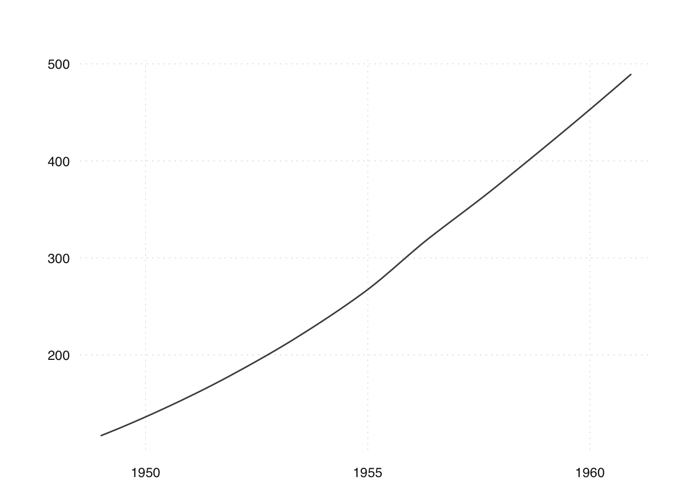
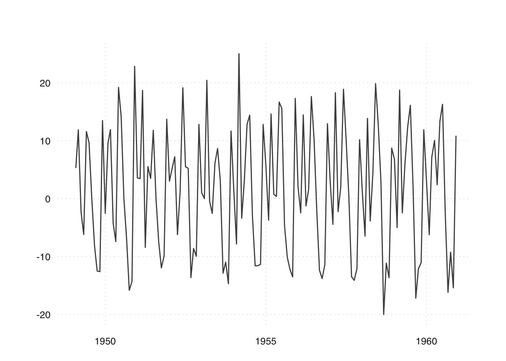
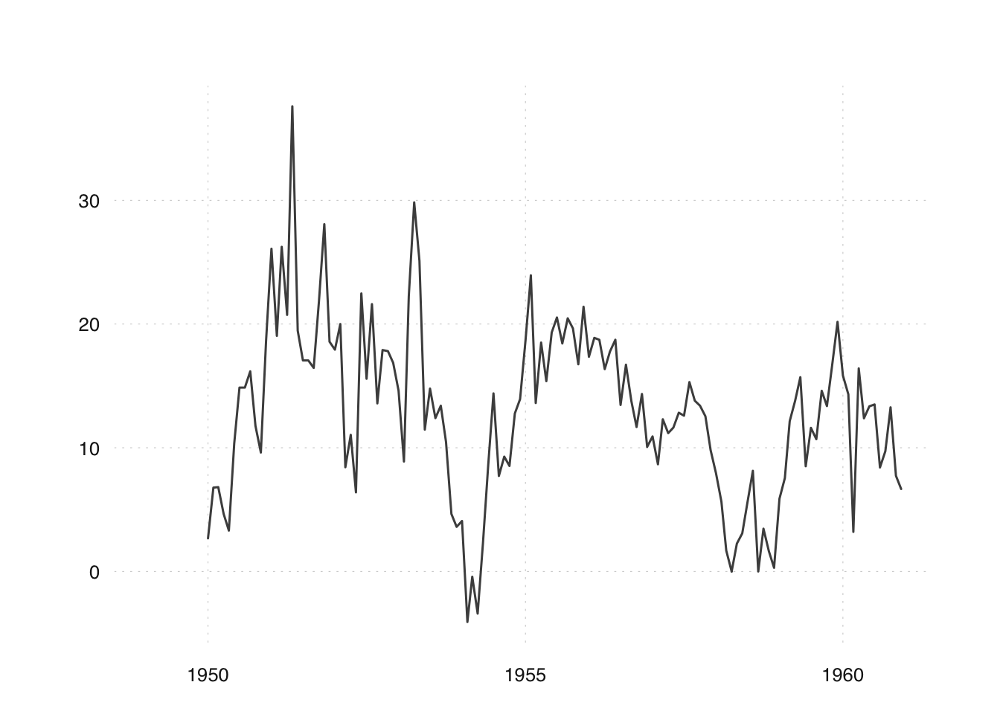
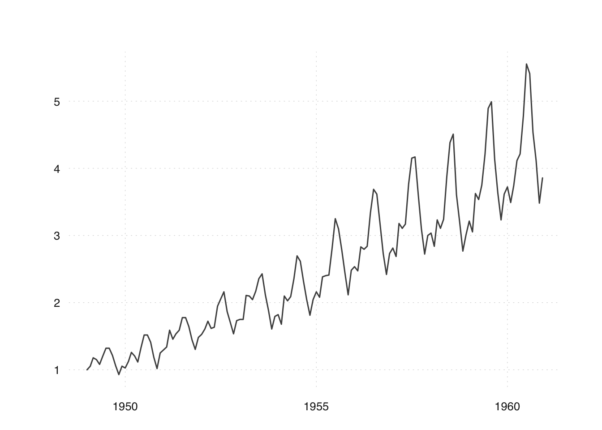
10.8.3 Combine multiple time series
A set of helper functions makes it easy to combine multiple time series, even
if their classes are different. The basic workhorse is ts_c, which simply
collect time series. Again, this works with single or multiple series of any
ts-boxable class:
## # A tibble: 7,656 x 3
## id time value
## <chr> <dttm> <dbl>
## 1 DAX 1991-07-01 03:18:27 1629.
## 2 DAX 1991-07-02 13:01:32 1614.
## 3 DAX 1991-07-03 22:44:38 1607.
## 4 DAX 1991-07-05 08:27:43 1621.
## 5 DAX 1991-07-06 18:10:48 1618.
## 6 DAX 1991-07-08 03:53:53 1611.
## 7 DAX 1991-07-09 13:36:59 1631.
## 8 DAX 1991-07-10 23:20:04 1640.
## 9 DAX 1991-07-12 09:03:09 1635.
## 10 DAX 1991-07-13 18:46:15 1646.
## # … with 7,646 more rowsIf you want to choose a different name for single series, name the arguments:
## # A tibble: 7,584 x 3
## id time value
## <chr> <dttm> <dbl>
## 1 DAX 1991-07-01 03:18:27 1629.
## 2 DAX 1991-07-02 13:01:32 1614.
## 3 DAX 1991-07-03 22:44:38 1607.
## 4 DAX 1991-07-05 08:27:43 1621.
## 5 DAX 1991-07-06 18:10:48 1618.
## 6 DAX 1991-07-08 03:53:53 1611.
## 7 DAX 1991-07-09 13:36:59 1631.
## 8 DAX 1991-07-10 23:20:04 1640.
## 9 DAX 1991-07-12 09:03:09 1635.
## 10 DAX 1991-07-13 18:46:15 1646.
## # … with 7,574 more rowsMultiple series can be also combined to a single series:
## # A tibble: 216 x 2
## time value
## <date> <dbl>
## 1 1949-01-01 112
## 2 1949-02-01 118
## 3 1949-03-01 132
## 4 1949-04-01 129
## 5 1949-05-01 121
## 6 1949-06-01 135
## 7 1949-07-01 148
## 8 1949-08-01 148
## 9 1949-09-01 136
## 10 1949-10-01 119
## # … with 206 more rowsts_chain offers an alternative way to combine time series, by chain-
linking them. The following prolongs a short time series with percentage
change rates of a longer one:
10.8.4 Frequency conversion and alignment
There are functions to convert the frequency of time series and to regularize irregular time series. The following changes the frequency of two series to annual:
## Time Series:
## Start = 1949
## End = 1954
## Frequency = 1
## AirPassengers austres
## 1949 1520 NA
## 1950 1676 NA
## 1951 2042 NA
## 1952 2364 NA
## 1953 2700 NA
## 1954 2867 NAWe already met ts_span, which can be used to limit the time span of a
series. ts_regular makes irregular time series regular, by turning implicit
missing values into explicit NAs.
## Dec
## 1960 432## Oct Nov Dec
## 1960 461 390 432## Jul Aug Sep Oct Nov Dec
## 1960 622 606 508 461 390 43210.8.5 Shortcuts for pivot_wider and pivot_longer
## # A tibble: 144 x 3
## id time value
## <chr> <date> <dbl>
## 1 mdeaths 1974-01-01 2134
## 2 mdeaths 1974-02-01 1863
## 3 mdeaths 1974-03-01 1877
## 4 mdeaths 1974-04-01 1877
## 5 mdeaths 1974-05-01 1492
## 6 mdeaths 1974-06-01 1249
## 7 mdeaths 1974-07-01 1280
## 8 mdeaths 1974-08-01 1131
## 9 mdeaths 1974-09-01 1209
## 10 mdeaths 1974-10-01 1492
## # … with 134 more rows10.8.6 And plot just about everything
Of course, this works for plotting, too. The basic function is ts_plot,
which can be used with any ts-boxable time series, single or multiple, of any
frequency:
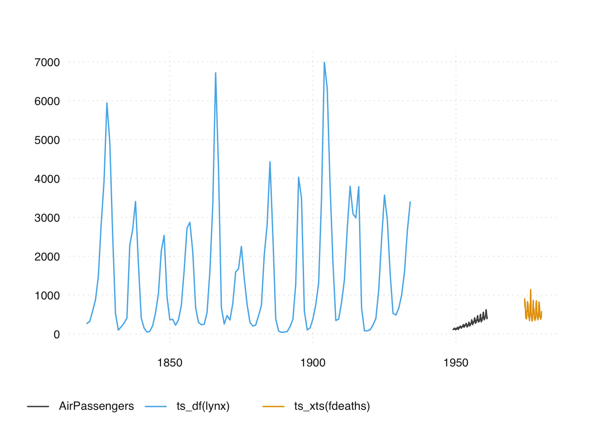
If you want to use different names than the object names, just name the arguments (and optionally set a title):
ts_plot(
`Airline Passengers` = AirPassengers,
`Lynx trappings` = ts_df(lynx),
`Deaths from Lung Diseases` = ts_xts(fdeaths),
title = "Airlines, trappings, and deaths",
subtitle = "Monthly passengers, annual trappings, monthly deaths"
)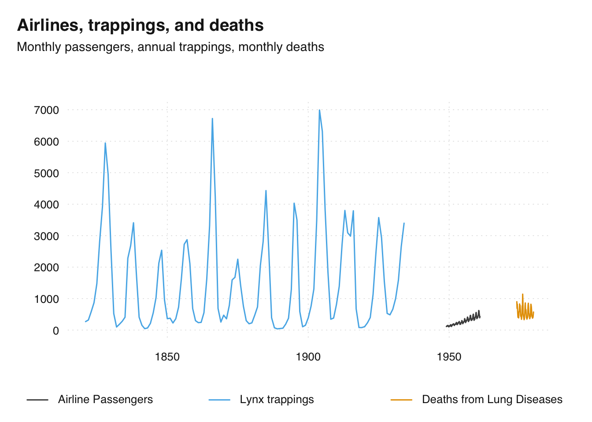
There is also a version that uses
ggplot2 that uses the same
syntax. With theme_tsbox() and scale_color_tsbox(), the output of
ts_ggplot is very similar to ts_plot.
ts_ggplot(
ts_scale(
ts_c(
mdeaths,
austres,
AirPassengers,
DAX = EuStockMarkets[ ,'DAX']
)
)
) +
theme_tsbox() +
scale_color_tsbox()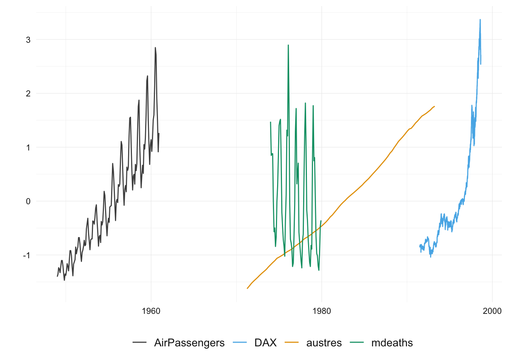
10.8.7 Using tsbox in a dplyr / pipe workflow
tsbox works well with tibbles and with %>%, so it can be nicely integrated
into a tidyverse workflow:
library(tidyverse)
library(nycflights13)
dta <- weather %>%
select(origin, time = time_hour, temp, humid, precip) %>%
ts_long()## [id] (columns left of [time] column): 'origin'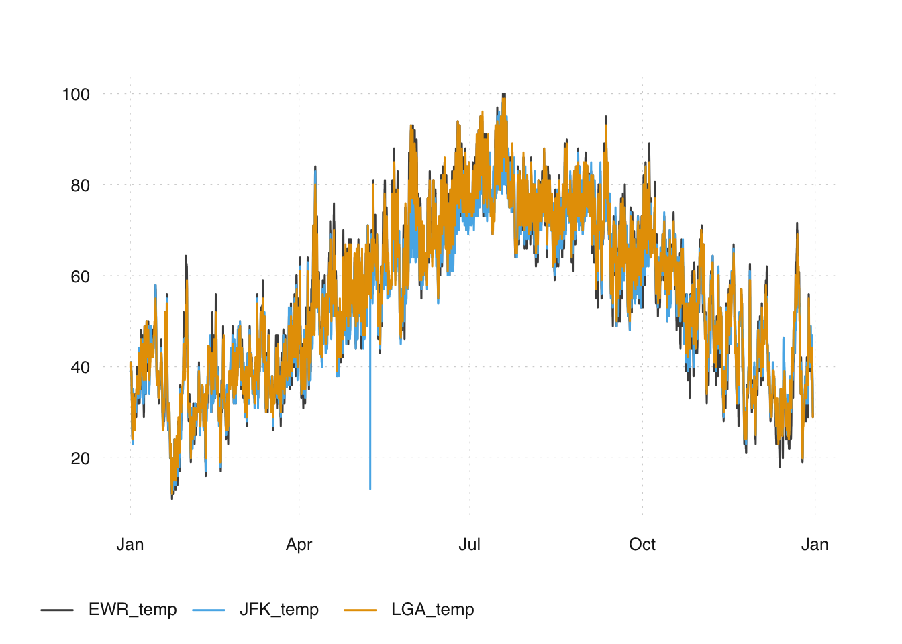
10.9 Exercises
Combine
fdeathsandmdeathsto a multiple time series. Call ittdeathsConvert them first to a long tibble, then to a wide tibble.
Plot
fdeathsandmdeaths, usingts_plot(). Make sure to use some nice labels for the series in the legend.Use
ts_trend()to estimate a trend line of the two series. Include it in the same graph.